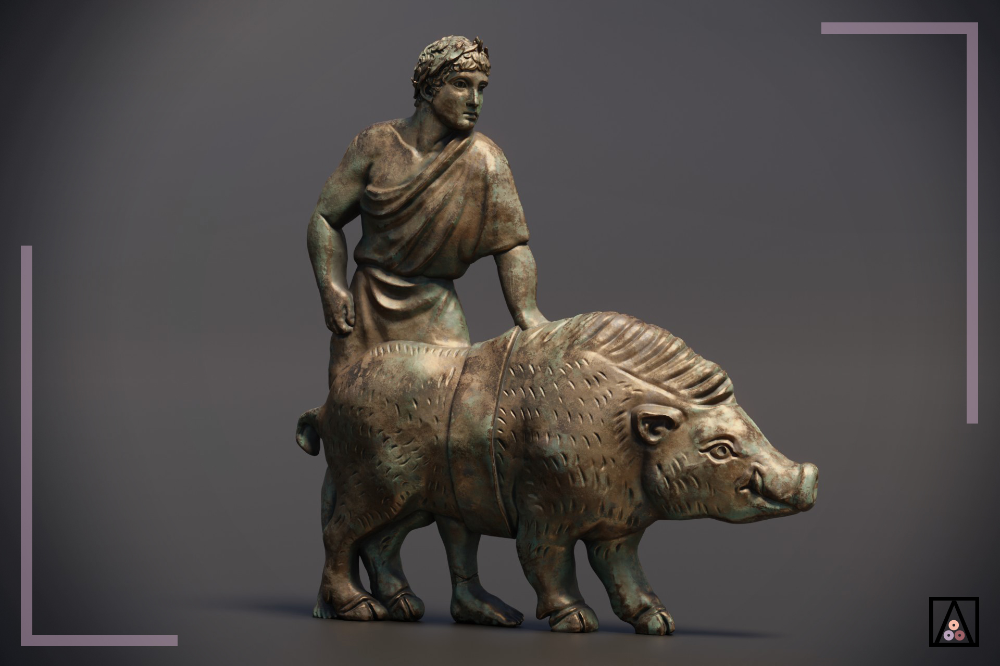

Los orígenes del jamón ibérico se remontan a los pueblos prerromanos, como celtas e íberos, quienes ya consumían cerdo y lo consideraban un producto valioso, incluso de culto. Los fenicios, antes de la era romana, comercializaban carne de cerdo en regiones como Cádiz y Málaga, utilizando la sal como método de conservación. Este descubrimiento de la salazón fue crucial, ya que permitió preservar la carne por largos períodos, sentando las bases para la producción del jamón.
En la época romana, el jamón ibérico adquirió estatus de manjar. Documentos como los de Catón el Viejo, del siglo III a.C., describen técnicas de salazón para conservar perniles, destacando su importancia. El sacrificio del cerdo se profesionalizó, pasando de esclavos a cocineros especializados, y el jamón se convirtió en un producto comercial clave, exportado por todo el Imperio Romano, hasta el punto de que se acuñaron monedas con su forma.
Durante el dominio musulmán en la península, el consumo de cerdo y jamón disminuyó drásticamente debido a restricciones religiosas, pero los clérigos cristianos mantuvieron viva la tradición en monasterios, criando cerdos y documentando métodos de conservación. Con la Reconquista, el consumo de cerdo resurgió como símbolo cristiano, y la Inquisición lo usó para identificar conversos. A finales del siglo XIII, la cría de cerdos en semilibertad y la elaboración de embutidos se popularizaron entre los campesinos.
En el siglo XX, el jamón ibérico alcanzó su máximo esplendor gracias a avances en la genética del cerdo, mejoras en piensos y técnicas de producción. A partir de los años 60, se regularon aspectos como la raza, la alimentación y el origen, estableciendo categorías como jamón ibérico de cebo o de bellota. Estas normativas aseguraron la calidad y facilitaron su exportación, consolidando al jamón ibérico como un emblema gastronómico de renombre mundial.